6 Foundation Models for Segmentation
This chapter continues the segmentation story from Chapter 4 and Section 5.5: from the classical formulation of segmentation as a dense, per-pixel labelling problem, to the Segment Anything (SAM) family of promptable foundation models developed by Meta AI. We first fix the taxonomy of segmentation tasks (Section 6.1), then look at instance segmentation via detection and the Feature Pyramid Network it relies on (Section 6.2) — the architectural ingredient, together with the DETR transformer detector (Section 5.5), that SAM inherits. We then devote the second half of the chapter to the SAM line itself — the original SAM (Section 6.3), its video extension SAM 2 (Section 6.4), and the open-vocabulary SAM 3 (Section 6.5).
6.1 Segmentation Tasks
Segmentation asks a model to reason about an image below the level of a single label or box. Three variants are worth distinguishing:
- Semantic Segmentation classifies every pixel of an image into a fixed set of categories. It does not separate two objects of the same class — all “cat” pixels receive the same label regardless of how many cats are present.
- Instance Segmentation additionally distinguishes between distinct objects of the same class, producing one mask per object instance.
- Panoptic Segmentation unifies the two by labelling both countable “things” (people, cars — which get instance identities) and uncountable “stuff” (sky, grass, road — which do not) at the pixel level.
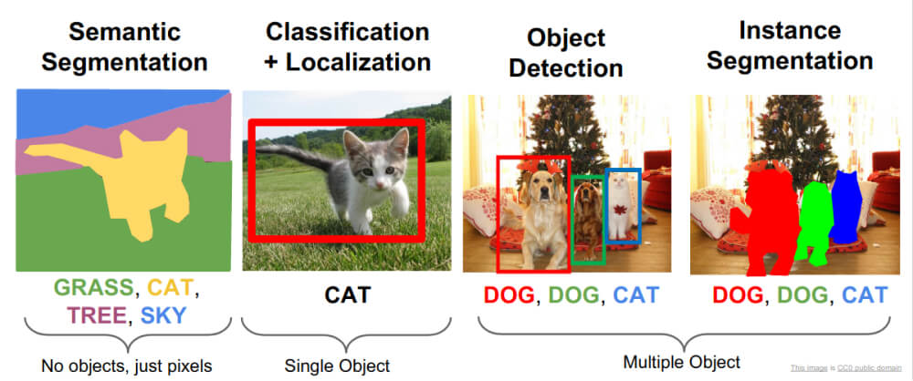
6.1.1 Semantic segmentation architectures
- U-Net (2015) (Ronneberger et al. 2015) is the canonical semantic segmentation model: a convolutional downsampling (encoder) path that compresses the image into semantically rich, low-resolution feature maps, followed by a transposed-convolution upsampling (decoder) path that recovers full resolution. Crucially, skip connections copy feature maps from the encoder to the matching decoder stage, letting the network combine high-level semantics (what) with low-level spatial detail (where) for a sharp segmentation map.
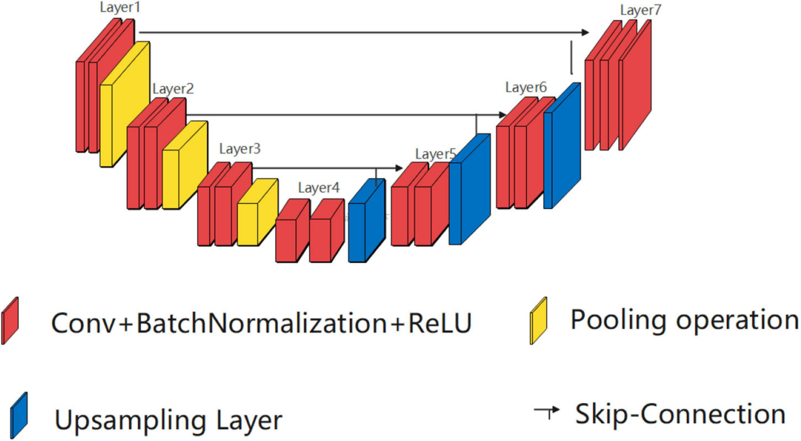
- DeepLab (2015) takes an alternative view of the downsampling problem. Rather than pooling away spatial resolution, it introduces dilated (atrous) convolutions, which enlarge the receptive field without reducing resolution or adding parameters, and refines the coarse network output with a fully-connected Conditional Random Field (CRF) to sharpen object boundaries.
6.1.2 Optimization: pixel-wise loss and class imbalance
The standard training objective for semantic segmentation is a pixel-wise softmax cross-entropy, summed over classes at every pixel:
\[ \mathrm{CE} = -\sum_{\text{classes}} y_{\text{true}}\,\log\big(y_{\text{pred}}\big). \]
Dense prediction, however, is dominated by easy background pixels, and foreground/background class imbalance can swamp the gradient. Focal Loss (Lin, Goyal, et al. 2017) addresses this by down-weighting well-classified examples with a modulating factor \((1-p_t)^{\gamma}\):
\[ \mathrm{CE}(p_t) = -\log(p_t), \qquad \mathrm{FL}(p_t) = -\,(1-p_t)^{\gamma}\,\log(p_t), \]
where \(p_t\) is the model’s estimated probability of the ground-truth class and \(\gamma \ge 0\) is a focusing parameter. As \(\gamma\) grows, the loss (and hence the gradient) contributed by confidently classified pixels shrinks toward zero, concentrating learning on the hard, mis-classified examples.
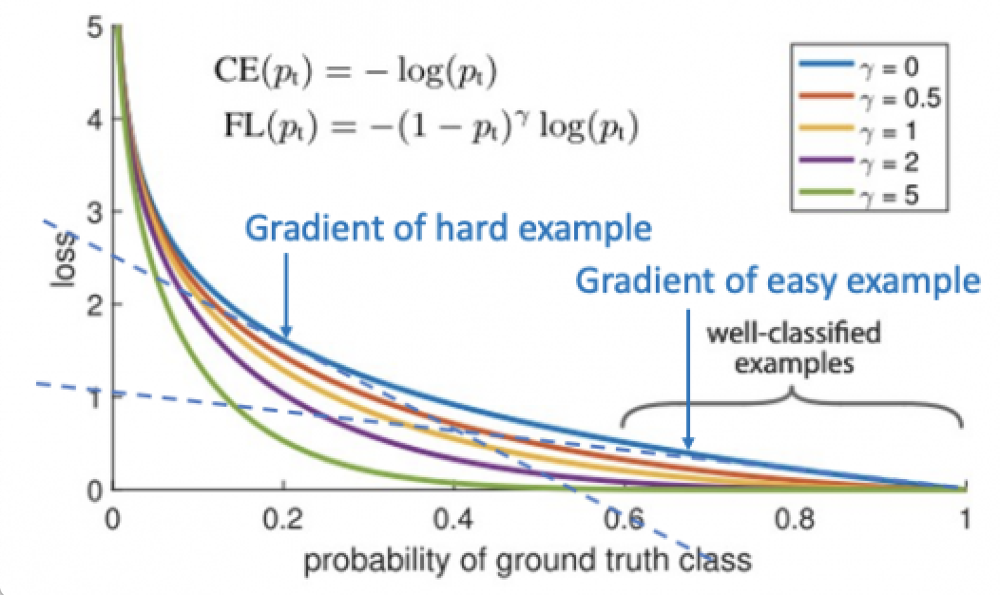
6.2 Instance Segmentation via Detection
A productive family of instance-segmentation models is obtained by taking a strong object detector and bolting on a segmentation head — Mask R-CNN (He et al. 2017) (already covered in detail in Section 4.2.3) is the most influential example. Mask R-CNN is almost always paired with a Feature Pyramid Network (FPN) (Lin, Dollár, et al. 2017), which is the piece we focus on here.
6.2.1 Feature Pyramid Networks
The Feature Pyramid Network is the component that lets the region proposal stage see objects across a wide range of sizes. A naive detector predicts from a single high-level feature map, which is semantically strong but spatially coarse — poor for small objects and for the fine detail segmentation needs.
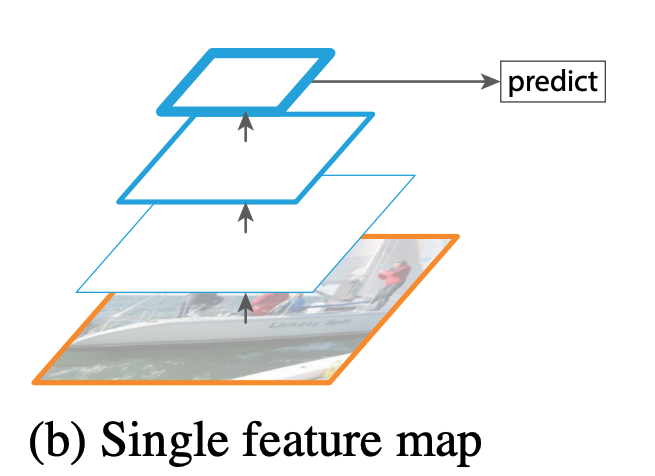
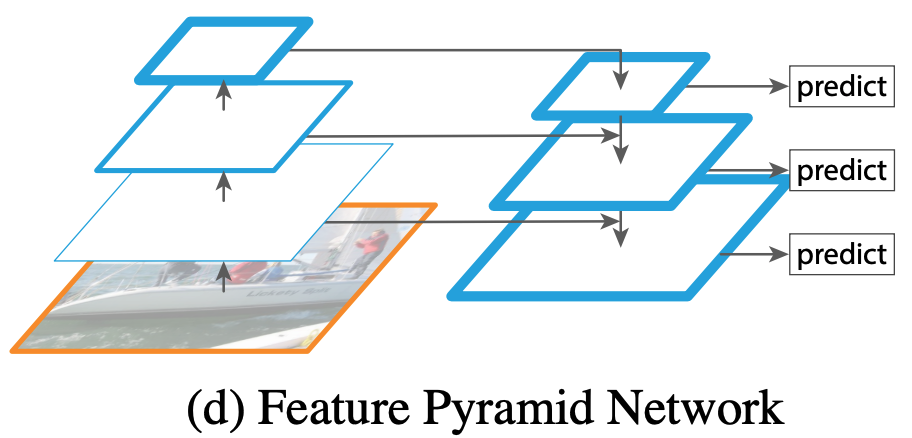
Concretely, the FPN augments the bottom-up backbone (ResNet stages \(C_2,\dots,C_5\)) with a top-down pathway and lateral connections. Each top-down map \(M_\ell\) is formed by upsampling the coarser map above it (by \(2\times\)) and adding a \(1{\times}1\)-projected lateral feature from the matching bottom-up stage; a \(3{\times}3\) convolution then produces the output pyramid level \(P_\ell\). A shared predictor head (objectness + bounding box) is applied to every level.
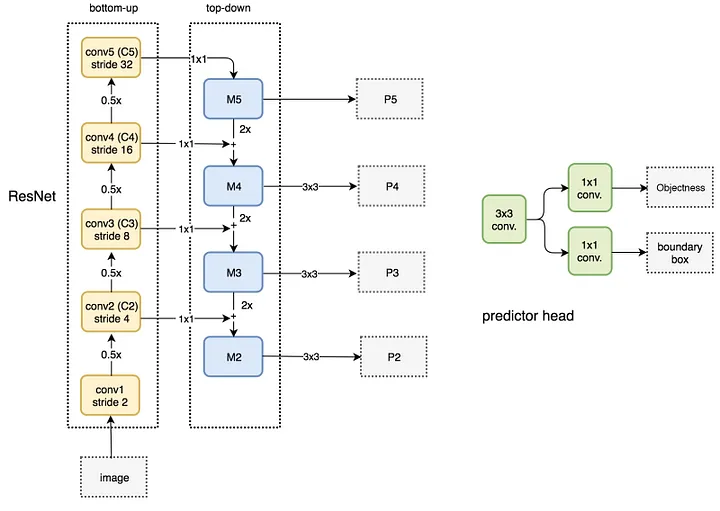
Given the pyramid, the RoI’s feature patch is extracted from the level whose scale best matches the RoI’s size. For a region of interest of width \(w\) and height \(h\), the pyramid level \(k\) is chosen as
\[ k = \Big\lfloor\, k_0 + \log_2\!\big(\sqrt{wh}\,/\,224\big)\Big\rfloor, \qquad k_0 = 4, \]
so that larger RoIs are read off coarser (higher-\(k\)) maps and smaller RoIs off finer maps; here \(k\) indexes the \(P_k\) layer of the FPN used to generate the feature patch, and \(224\) is the canonical ImageNet pre-training size.
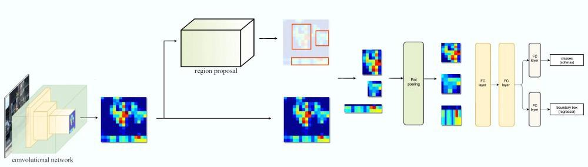
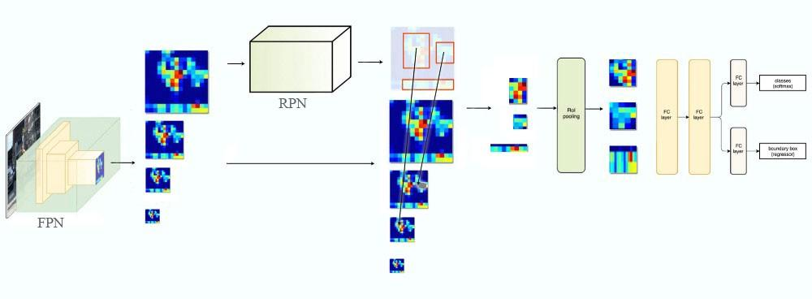
Detection and segmentation were later unified under a single transformer architecture — the DETR detection transformer and its panoptic-segmentation extension, covered in Section 5.5 — which removes anchors and non-maximum suppression entirely by framing detection as direct set prediction.
6.3 SAM (Segment Anything Model): A Foundation Model for Segmentation
The original Segment Anything (SAM, 2023) (Kirillov et al. 2023) model — its promptable-segmentation pre-training task, ViT image encoder, prompt encoder, mask decoder, the SA-1B data engine, and its zero-shot transfer properties — is covered in Section 6.3 of the Vision Transformers chapter. The rest of this chapter picks up where that section leaves off: SAM’s extension to video (SAM 2) and to open-vocabulary concept prompts (SAM 3).
6.4 SAM 2: Segment Anything in Images and Videos
SAM 2 (2024) (Ravi et al. 2024) generalizes SAM from static images to video, unifying image and video segmentation under a single Promptable Visual Segmentation (PVS) task. In PVS, a prompt (points, box, or mask) may be supplied on any frame, and the model must produce a spatio-temporal mask — a masklet — that segments and tracks the target object through the entire clip, while remaining interactively correctable: an extra click on a later frame refines the whole masklet.
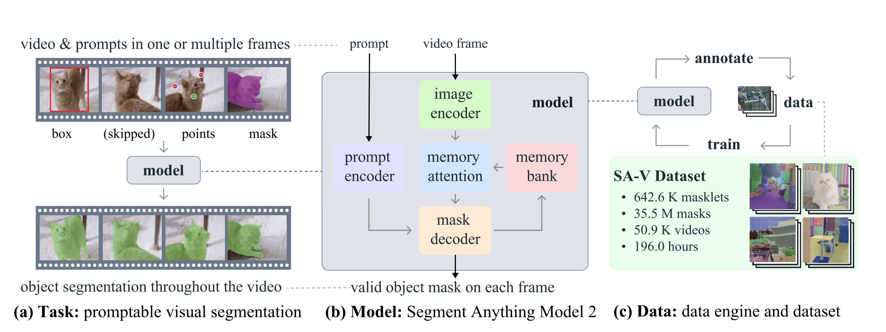
The core challenge relative to images is temporal consistency under occlusion, appearance change, and re-identification. SAM 2 addresses this with a streaming memory architecture that processes frames one at a time and conditions each prediction on what it has already seen:
- Image encoder (streaming). A hierarchical (Hiera) vision transformer encodes each incoming frame once, in a streaming fashion, producing per-frame embeddings — the video analogue of SAM’s single-pass image encoder, enabling real-time interaction.
- Memory bank. A FIFO queue stores features and predicted masks from a window of recent frames plus the prompted frames, together with object pointers — compact tokens summarizing the object’s appearance.
- Memory attention. Before decoding the current frame, transformer blocks let the frame embedding cross-attend to the memory bank, so the mask prediction is conditioned on the object’s past appearance and motion.
- Prompt encoder & mask decoder. Essentially inherited from SAM, but now conditioned on the memory-attended features. As in SAM, ambiguity is resolved by emitting multiple candidate masks and keeping the highest-confidence one; an added occlusion head predicts whether the object is present at all in the current frame, which is essential for objects that leave and re-enter the view.
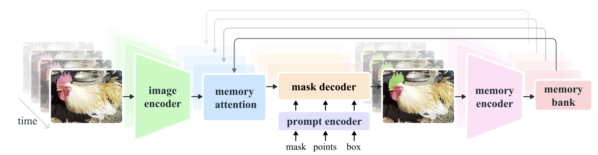
Because a single image is just a one-frame video, this architecture subsumes SAM: on still images SAM 2 is more accurate and roughly 6× faster than the original SAM, while also handling video.
6.4.1 The SA-V dataset
SAM 2 is trained with the same model-in-the-loop philosophy, using an interactive engine in which annotators correct SAM 2’s own masklets frame by frame. The resulting SA-V dataset is the largest video segmentation resource to date — 50.9K videos (196 hours) with 642.6K masklets and 35.5M masks — deliberately covering whole objects and their parts to match SAM’s granularity.
6.5 SAM 3: Segment Anything with Concepts
SAM 3 (November 2025) (Carion et al. 2025) takes the decisive step from geometric prompting (a point/box/mask always refers to one object) to conceptual prompting. It introduces Promptable Concept Segmentation (PCS): given a concept prompt — a short noun phrase (e.g. “yellow school bus”, “striped cat”), one or more image exemplars, or a combination — the model must detect, segment, and track every instance of that concept across an image or video, each with a unique identity. This aligns SAM with the open-vocabulary goal of modern instance segmentation: exhaustively finding all occurrences of an open-ended category, rather than a single prompted object. SAM 3 also retains SAM 2’s interactive PVS capabilities.
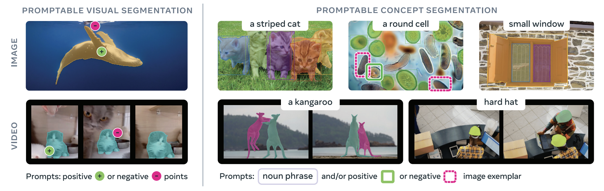
Architecture — a decoupled detector + tracker sharing one backbone. SAM 3 is an 848M-parameter model built from:
- A shared vision backbone feeding both sub-systems.
- An image-level detector — a DETR-based (Section 5.5) model conditioned on the concept prompt (text, image exemplars, or geometry), which localizes and segments all instances in a frame.
- A memory-based video tracker that inherits the SAM 2 streaming memory design (Section 6.4) to propagate instance identities across frames.
A central innovation is the presence head, which decouples recognition from localization. Rather than asking each detection query to simultaneously decide “is this concept present?” and “where is it?”, a dedicated presence token answers the what/whether question globally, freeing the query embeddings to focus on where. This disentanglement markedly improves discrimination between similar concepts and boosts detection accuracy — particularly with the hard negatives (visually confusable non-matches) baked into training.
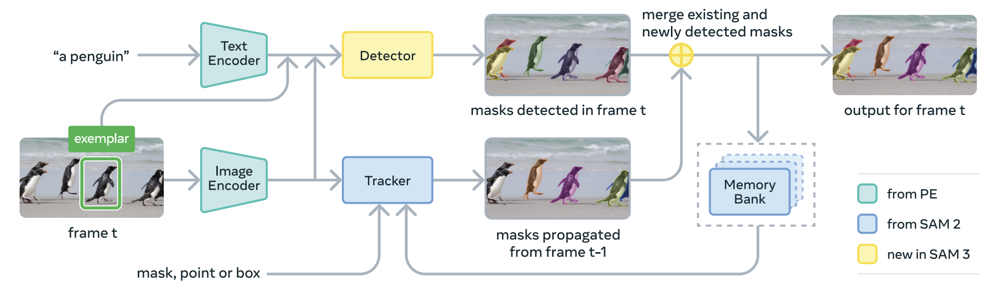
Data — the SA-Co data engine. SAM 3 is trained on Segment Anything with Concepts (SA-Co), produced by a scalable data engine that mixes AI annotators with humans and yields on the order of 4M unique concept labels (including deliberate hard negatives) across images and videos — far beyond the closed vocabularies of COCO or LVIS.
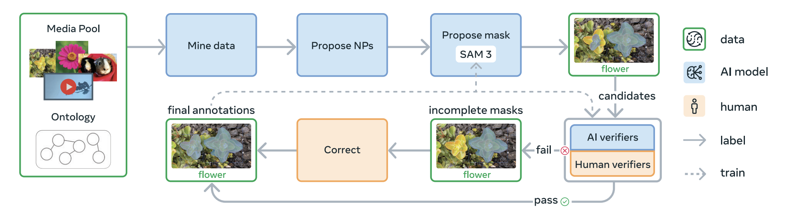
Results. SAM 3 roughly doubles (≈2×) the accuracy of prior systems on both image and video PCS, while maintaining and improving SAM 2’s interactive visual-segmentation quality. On the accompanying SA-Co benchmark — which spans 270K unique concepts, over 50× more than existing benchmarks — it reaches an estimated 75–80% of human performance. Meta open-sourced both the model and the SA-Co benchmark.
The trajectory in one line. SAM made segmentation promptable and class-agnostic; SAM 2 made it temporal, tracking a prompted object through video with streaming memory; SAM 3 makes it conceptual and exhaustive, turning a phrase or exemplar into masks for all matching instances across images and video.